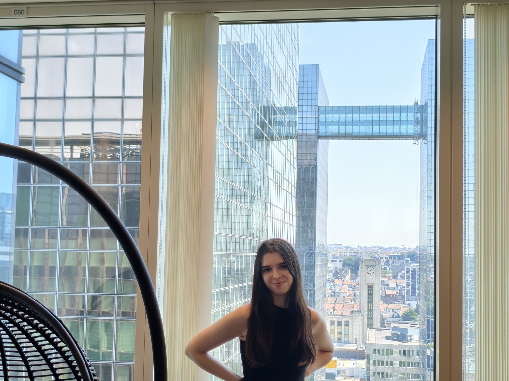

ABOUT
Silvia Busquets Xapellí
Graduate work in economics and finance with interests in empirical research and European affairs

Economics, finance and European affairs
Economics
Finance
Research
European Affairs
I am completing graduate studies across UCLouvain and Católica Lisbon School of Business & Economics, with a focus on economics and finance.
My interests include empirical economics, financial analysis, macroeconomics and European institutions. I enjoy working with data, exploring how economic mechanisms operate in practice and communicating findings in a clear and accessible way.
This website brings together selected research, educational explainers and independent publishing projects. Each section grows as work becomes ready to share publicly.